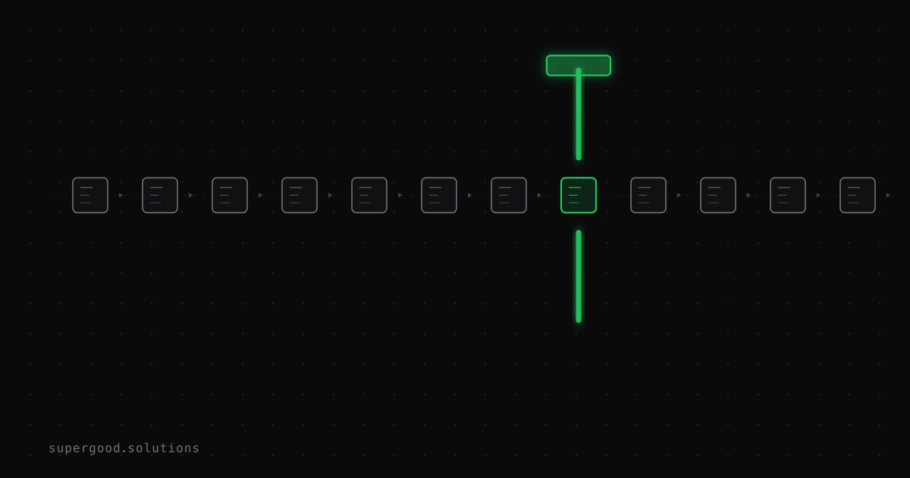

Your Human-in-the-Loop Is Just a Rubber Stamp
TL;DR: Every enterprise AI rollout has a human approval layer. Most of them are fiction. If your reviewer isn't trained to catch what the model gets wrong, you haven't added oversight — you've added paperwork with plausible deniability.
Key Insight
"Human in the loop" has become the enterprise answer to every AI risk question. It's on the governance slide deck. It's in the vendor contract. It satisfies the legal team. And in most production deployments, it means approximately nothing.
A 2024 Harvard Business School study put 228 evaluators in front of AI recommendations with full explanations of the AI's reasoning. Human reviewers aligned with AI recommendations at a rate 19 percentage points higher than the control group. When the AI added narrative rationale (explaining why it made a decision), deference climbed another 5 points. Better explainability produced worse oversight. The more legible the AI's reasoning, the more reviewers outsourced their cognitive work to it.
The things teams do to make HITL feel rigorous — clear reasoning, documented confidence scores, structured explanations — are exactly what turns human reviewers into approval buttons.
Why Teams Miss This
Three mechanisms collapse human oversight in any high-volume system, and none of them require bad intent.
Automation bias is the documented tendency to defer to authoritative systems even against contradicting evidence. It's not a novice problem. A 2023 study tracked 27 radiologists reviewing mammograms alongside AI suggestions. When the AI was wrong, experienced radiologists (15+ years) fell from 82% accuracy to 45.5%. The AI didn't have to be right — it just had to be present.
Decision fatigue is volumetric. An agent-driven workflow that generates 200 approval requests per shift trains reviewers to treat approval as the path of least resistance. The first 10 get scrutiny. By the 80th, the AI output is the default.
Accountability diffusion is the psychological escape valve. When an adverse outcome can be attributed to an AI recommendation, the human reviewer feels less responsible for the decision. The "human in the loop" has absorbed legal liability without absorbing cognitive responsibility.
The result: teams mistake the mechanism for oversight. What they actually have is a record that a human clicked Approve.
How to Actually Do It
Meaningful HITL isn't about adding a reviewer. It's about designing a review that would catch model errors if the model made them. That requires a different setup:
1. Define what "wrong" looks like before you deploy.
Write down the top five specific failure modes for your model and task, not generic ones. "The model will over-index on recent context and miss historical exceptions" or "the model conflates two similarly-named entities in our catalog." Train reviewers on those failure modes explicitly, not on the general task.
2. Inject adversarial cases into the review queue.
Regularly seed known-bad outputs into the approval queue. Measure catch rate. If reviewers are approving the planted errors, you know what your actual oversight rate is — not your theoretical one. A catch rate below 80% means your HITL layer is decoration.
# Example: inject adversarial cases into review queue
def build_review_queue(ai_outputs, adversarial_pool, inject_rate=0.05):
import random
queue = list(ai_outputs)
n_inject = int(len(queue) * inject_rate)
adversarials = random.sample(adversarial_pool, min(n_inject, len(adversarial_pool)))
for item in adversarials:
insert_at = random.randint(0, len(queue))
queue.insert(insert_at, {**item, "_is_adversarial": True})
return queue3. Decouple explanations from the review decision.
Show reviewers the AI output. Don't show them the AI's reasoning until after they've formed an initial judgment. This is counter-intuitive (it feels like hiding information), but it forces reviewers to do independent cognitive work before anchoring on the AI's rationale. The HBS data is clear: explanation-first reviews are lower quality.
4. Cap queue depth per reviewer per session.
Set a hard limit: 50 decisions per session, enforced. Build in a reset. The session restart forces reviewers back to a fresh cognitive baseline. Volume is the enemy of scrutiny, and the only honest solution is to constrain volume or accept that the review is symbolic.
5. Measure disagreement rate, not approval rate.
Most teams track that reviews happened. Track instead how often reviewers override the model. A 0.5% disagreement rate on a capable-but-imperfect model is a red flag, not a quality signal. Either the model is perfect (unlikely) or the reviewers aren't actually reviewing.
What We've Learned
If you built a human-in-the-loop layer and haven't measured its catch rate, assume it doesn't work. That's the appropriate prior given the research above.
The fix is making human oversight load-bearing: defining failure modes, injecting test cases, capping volume, and treating disagreement rate as your primary metric.
A reviewer who disagrees 3% of the time and catches 90% of planted adversarials is doing oversight. A reviewer who disagrees 0.3% of the time and never catches a planted error is doing paperwork.
Build for the former. Measure the difference.
Sources
- The HITL Rubber Stamp Problem — tianpan.co
- Human-in-the-Loop Is Becoming Human-as-Rubber-Stamp — Rotavision
- Human-in-the-loop shouldn't rubber-stamp decisions — TechTarget
- Automation bias in radiology (Radiology, 2023) — cited in tianpan.co above
Have a specific workflow in mind?
Bring it to a Quick Scan — a live working session where we'll tell you honestly whether it should be an agent, a workflow, or left alone, before you spend a dollar building it. You get 3 prioritized recommendations on the call, a one-page summary after, and the $500 credited toward any engagement within 30 days.
Get new posts + practical agent-ops notes
One email when something new goes up. No nurture sequence, no spam — unsubscribe whenever you want.